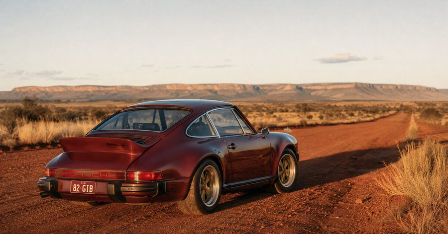

Biome-specific engineering
Cooling, fuelling and sealing specified for Australian heat and dust. Suspension tuned for coarse-chip country roads rather than alpine passes.
Artarmon, Sydney · 1979–1985 G-body
A Porsche 911 reimagined by Antipode. Built by master hands in Sydney, on the most honest of the air-cooled cars, and certified for Australian roads.
The car
We start with a 1979 to 1985 Porsche 911, the galvanised G-body, the most plentiful and most honest of the air-cooled cars. We strip it to bare metal, correct four decades of wear and every known weakness, and rebuild it as a modern classic tuned for real Australian driving.
Air-cooled flat-six. Manual gearbox. Nothing you do not need. Everything you do.

The philosophy · Rugged purity
The 911 was engineered for European roads and European weather. We engineer ours for coarse-chip country roads, summer heat, dust and distance. Cooling, fuelling and sealing are specified for our climate. The paint is chosen to live outdoors. The cabin is made to be used.
This is not a museum piece. It is a car built to be driven the length of a continent.
Cooling, fuelling and sealing specified for Australian heat and dust. Suspension tuned for coarse-chip country roads rather than alpine passes.
One workshop in Artarmon. Named technicians you can meet. A documented build journal and an open invitation to stand in the workshop while your car is made.
Certified under the NSW Vehicle Safety Compliance Certification Scheme by a licensed certifier, with the original shell and VIN retained. A car you can register, insure and resell.

The build
Every Antipode is built in one workshop in Artarmon, Sydney, by named technicians you can meet. From donor selection to the first start of the rebuilt engine, you receive a documented build journal and an open invitation to stand in the workshop.
Most owners visit more than once. That is the point.

Specifications

The air-cooled 911 was built for autobahns and alpine passes. Australia is neither.
Commissioning
Five stages over twelve to eighteen months, paid against milestones rather than up front.
Stage one
We meet, understand the car you want, and confirm feasibility before anyone commits to anything.
Stage two
You place a commissioning deposit and we secure the right donor together. The donor is bought with your funds and titled to you.
Stage three
We agree the specification, colour and cabin down to the stitch, and the engineering brief that follows from how you intend to drive it.
Stage four
Twelve to eighteen months, documented throughout, paid in stages against milestones you sign off in the workshop.
Stage five
Your car is certified, registered and handed over in Sydney, or shipped worldwide.

Who builds it
Antipode pairs a master exotic-car technician with three decades under the world's most demanding marques, and a Sydney team that has spent a career telling Australian stories to the world.
Every car is signed by the people who built it.
Enquire
Commissions are taken in small numbers. Tell us what you have in mind and we will come back to you personally.
The cars shown on this page are concept renders. Our first commission is in build and no completed Antipode has yet been delivered. We would rather tell you that than imply otherwise.